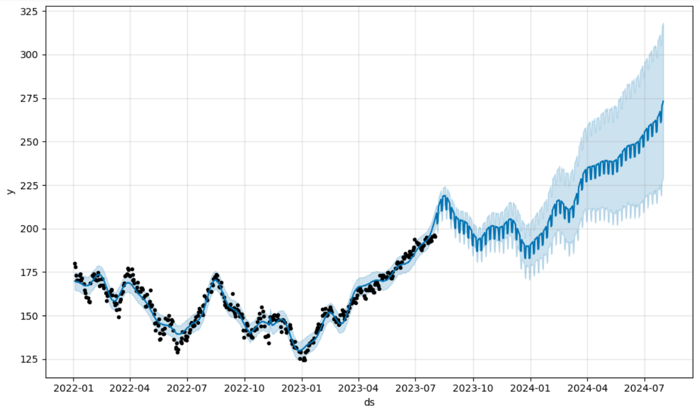
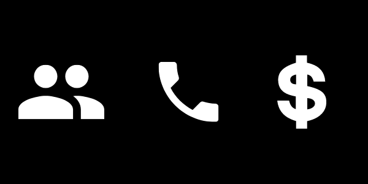

April 25, 2023
I leveraged machine learning techniques and conducted comprehensive exploratory data analysis to uncover key trends and patterns in telecom customer churn,
enabling data-driven insights to enhance customer retention strategies...

This project utilizes time-series analysis and ARIMA (AutoRegressive Integrated Moving Average) models to forecast Apple Inc. (AAPL) stock prices. Built in Python, it offers a hands-on exploration
of advanced statistical modeling for predicting stock market trends. Ideal for data science enthusiasts, finance professionals, and Python developers, this project provides a practical guide
to time-series forecasting and its real-world applications in financial markets. Dive into the code, experiment with the models, and uncover insights into stock price prediction!

This project leverages advanced statistical modeling to predict the success of bank telemarketing campaigns. By employing a range of techniques, including feature selection, data preprocessing,
and classification models, the study evaluates both probability-based (e.g., logistic regression, decision trees, neural networks)
and class-based (e.g., naive Bayes, k-nearest neighbors) approaches. The goal is to optimize marketing strategies and improve campaign outcomes through data-driven decision-making.